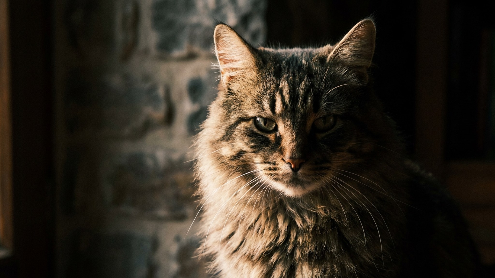

80 килограммов спокойствия — до тех пор, пока во двор не пришёл чужой. Московская сторожевая создана в СССР именно для этого: охранять территорию без специальной команды. Порода мало известна за пределами России, но те, кто держит её, редко меняют на другую. Разбираем, чем она отличается, кому подходит и что важно знать до того, как взять щенка.
🐾 Ваш питомец — московская сторожевая?
Заведите профиль в AnimaLife: приложение запомнит породу, возраст и вес и будет подсказывать по уходу именно для неё. Вопросы AI-ветеринару — круглосуточно и бесплатно.
Завести профиль → Завести в MAX →
У вас iPhone? AnimaLife есть в App Store
Московская сторожевая выведена в 1950-х годах в питомнике «Красная звезда» Советской армии. Основа — сенбернар и кавказская овчарка. От сенбернара взяли массу, добродушный нрав и красоту окраса. От кавказца — охранный инстинкт, недоверие к посторонним и устойчивость к холоду. Порода официально признана Российской кинологической федерацией, но не входит в FCI — это редкость за рубежом и хорошо узнаваемое явление внутри страны.
Московская сторожевая не агрессивна без причины. В семье она мягкая, терпеливая, хорошо уживается с детьми — размер при этом требует контроля: собака весом 70 кг может сбить ребёнка без всякого умысла. К посторонним недоверчива, территорию охраняет без дрессировки — это врождённое.
Порода плохо подходит тем, кто хочет «просто большую добрую собаку» без воспитания. Без чёткой иерархии и последовательного хозяина сторожевая начнёт принимать решения сама — и это может быть проблемой с незнакомыми людьми и другими животными.
Начинать нужно с 8–10 недель. Чем больше ситуаций, людей и звуков щенок увидит в первые месяцы, тем предсказуемее будет взрослая собака.
Важно: порода долго взрослеет — психологическая зрелость приходит к 2–2,5 годам. Терпение в воспитании окупается.
Московская сторожевая — собака двора. Городская квартира подойдёт только при условии длинных прогулок дважды в день, не менее 1,5–2 часов суммарно. Идеально — частный дом с огороженной территорией. В жару нужна тень и вода: густая шерсть плохо отводит тепло, перегрев наступает быстро.
Порода в целом выносливая, но размер накладывает ограничения. Суставы и позвоночник у крупных собак испытывают повышенную нагрузку — особенно при лишнем весе. Несколько правил профилактики, которые стоит взять в привычку:
Материал носит информационный характер и не заменяет очную консультацию ветеринара.
🐾 У вас московская сторожевая?
AnimaLife соберёт уход под породу: к каким болезням есть склонность, что проверять по возрасту, чем кормить и когда пора к врачу. Бесплатно, прямо в мессенджере.
Собрать план ухода → Собрать в MAX →
У вас iPhone? AnimaLife есть в App Store
🐾 Понравился разбор?
Подпишитесь на канал — каждый день разбираем по одному тревожному симптому у кошек и собак: что в пределах нормы, а когда пора к врачу. Подпишитесь, чтобы не пропустить разбор, который может спасти здоровье вашего питомца.